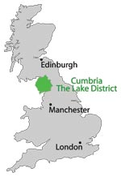

Maps of Cumbria and The Lake District
Our Lake District and Cumbria maps are brought to you by Wordsworth Country for your convenience. The Lake District is situated in Cumbria, England. |
 |
Interactive Cumbria Map |
Cumbria Railway Network |